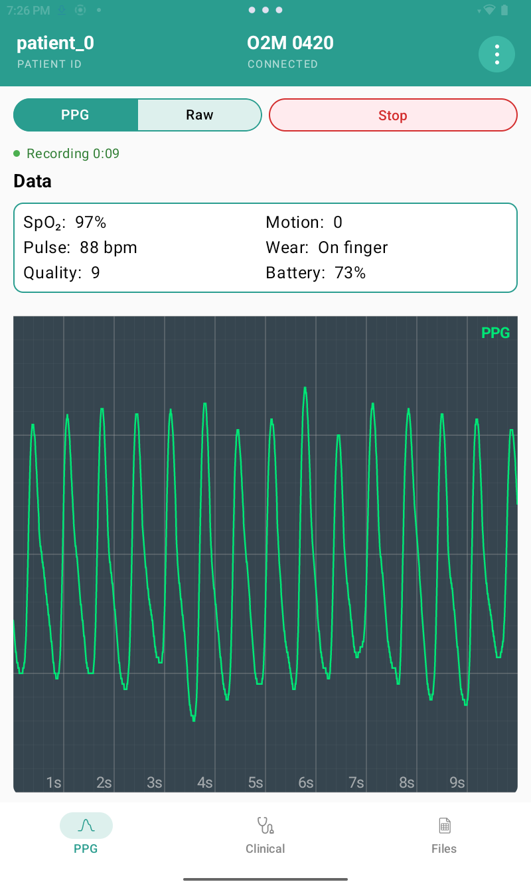
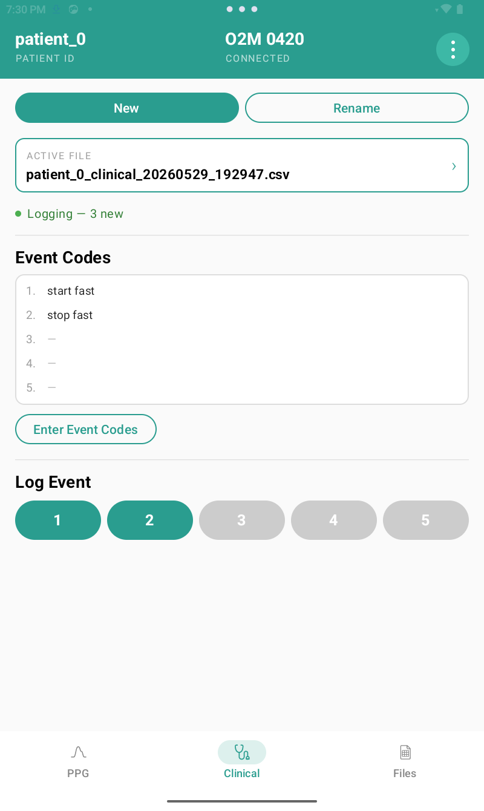
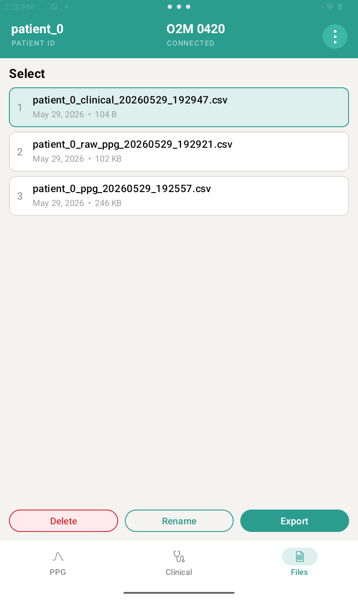

Understand your body's signals.
Real-time physiological data for research and discovery. Stream continuous, high-quality signals with visualization, recording, and export tools.
PPG Mode
Raw Mode
Continuous physiological monitoring outside specialized settings is still new, and what it might reveal about health and disease remains an open question. Answering that question requires data — high quality signals from real people, across real conditions.
We believe progress in the science and applications of continuous physiological monitoring depends on participation, not gatekeeping. Sympath exists to provide open, affordable tools for researchers, clinicians, and individuals — and to build toward something with the potential for widespread impact: an open, representative database of physiological signals.
Sympath connects to Health Canada licensed (MDL) and FDA cleared devices, giving you unprecedented access to raw physiological signals — no cloud required.
Visualize raw PPG data in real time. Access the full waveform — not just summary stats — for every heartbeat.
SpO₂, pulse rate, and motion — all streaming live from your connected device.
Record important events — medication, activity, symptoms — with timestamped, user-defined codes.
Export PPG recordings and clinical logs as CSV files. Bring your data into Python, R, MATLAB, or any research environment you use.
Nothing leaves your device without your explicit action. Your physiological data is stored locally.
Available in fingertip and ring-form sensors, compatible devices are Health Canada licensed (MDL) and FDA cleared pulse oximeters.
No complex setup. No cloud accounts. Connect, visualize, record, and export.
Connect a Sympath-compatible pulse oximeter to your Android phone or tablet.
Watch your PPG waveform, SpO₂, pulse, and motion data stream live. Start recording with one tap and log clinical events as they happen.
Export your data as CSV files. PPG recordings and clinical event logs are stored independently, ready for your analysis pipeline.



Anything else? Reach out via the contact form below.
Sympath is an independent Canadian health technology project, developed in the sunny Okanagan Valley of British Columbia. It was built by a practicing physician and data science enthusiast who, unable to find an affordable tool for her own projects, decided build one herself.
Questions? Comments? We'd love to hear from you.